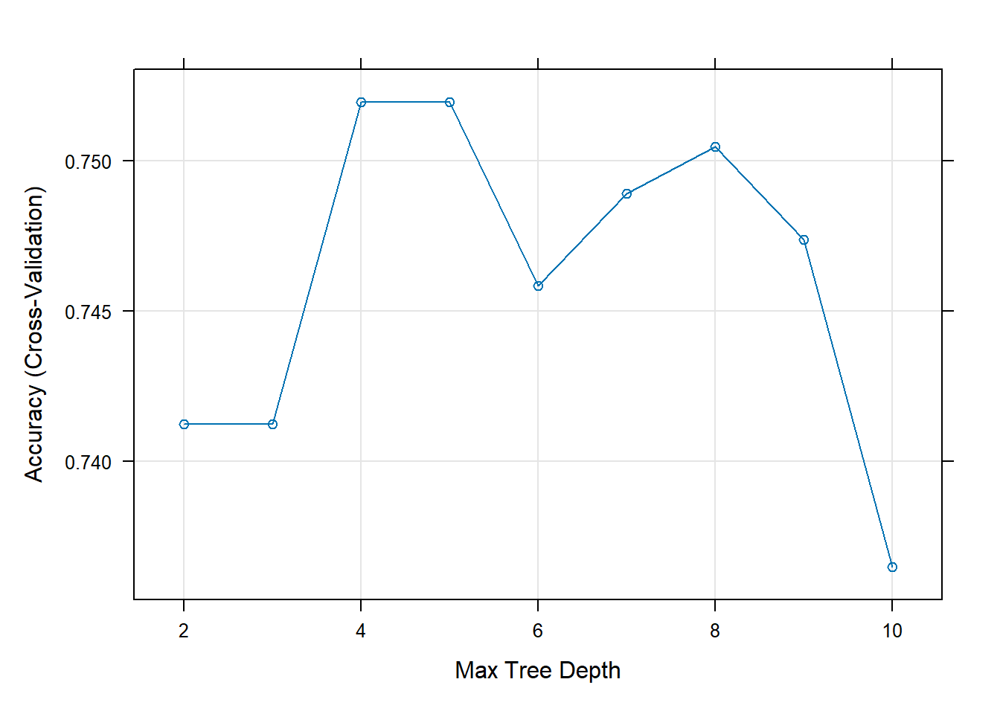
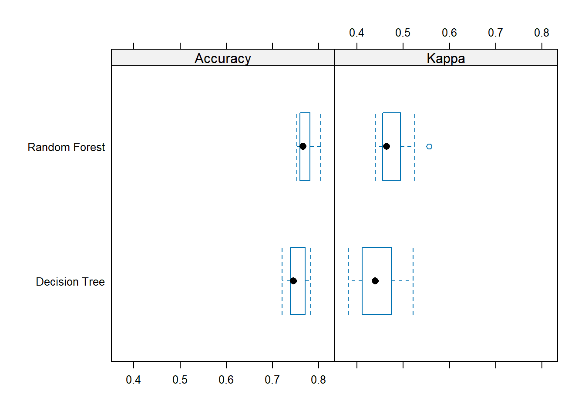

Open the Rmarkdown file of this assignment (link) in Rstudio.
Right under each question, insert a code chunk (you can use the hotkey Ctrl + Alt + I to add a code chunk) and code the solution for the question.
Knit the rmarkdown file (hotkey: Ctrl + Alt + K) to export an html.
Publish the html file to your Githiub Page.
Submission: Submit the link on Github of the assignment to Blackboard.
Use the PimaIndiansDiabetes dataset. Use 15% data for testing. Use cross-validation with of 7 folds to tune random forest (method='ranger'). What are the parameters that produce the greatest accuracy? What is the testing accuracy.
Use the PimaIndiansDiabetes dataset. Go to https://topepo.github.io/caret/available-models.html and pick a classification model. Tune the classification model using cross-validation of 7 folds.
library(tidyverse)library(caret)library(mlbench)library(rpart)data(PimaIndiansDiabetes, package ="mlbench")df <-tibble(PimaIndiansDiabetes)df$diabetes <-as.factor(df$diabetes)# splitset.seed(123)splitIndex <-createDataPartition(df$diabetes, p =0.85, list =FALSE)df_train <- df[splitIndex, ]df_test <- df[-splitIndex, ]# foldstrControl <-trainControl(method ="cv", number =7)# tunetuneGrid <-expand.grid(maxdepth =2:10)set.seed(123)tree_model <-train(diabetes ~ ., data = df_train, method ="rpart2",trControl = trControl, tuneGrid = tuneGrid, metric ="Accuracy")print(tree_model)
CART
653 samples
8 predictor
2 classes: 'neg', 'pos'
No pre-processing
Resampling: Cross-Validated (7 fold)
Summary of sample sizes: 559, 560, 559, 560, 560, 561, ...
Resampling results across tuning parameters:
maxdepth Accuracy Kappa
2 0.7412420 0.4203392
3 0.7412420 0.4203392
4 0.7519620 0.4446323
5 0.7519620 0.4446323
6 0.7458500 0.4133823
7 0.7489222 0.4318788
8 0.7504583 0.4360626
9 0.7473857 0.4278086
10 0.7364838 0.3967298
Accuracy was used to select the optimal model using the largest value.
The final value used for the model was maxdepth = 4.
# besthtree_model$bestTune
maxdepth
3 4
plot(tree_model)

(Model Comparison) Use the PimaIndiansDiabetes dataset. Pick two models at this link to compare using 7-fold cross validation method. Evaluate the accuracy of the final model on the test data.
library(tidyverse)library(caret)library(mlbench)library(rpart)library(ranger)data(PimaIndiansDiabetes, package ="mlbench")df <-tibble(PimaIndiansDiabetes)df$diabetes <-as.factor(df$diabetes)# splitset.seed(123)splitIndex <-createDataPartition(df$diabetes, p =0.85, list =FALSE)df_train <- df[splitIndex, ]df_test <- df[-splitIndex, ]# foldstrControl <-trainControl(method ="cv", number =7)# decision treeset.seed(123)tree_model <-train(diabetes ~ ., data = df_train, method ="rpart2",trControl = trControl, tuneGrid =expand.grid(maxdepth =2:10),metric ="Accuracy")# random forestset.seed(123)forest_model <-train(diabetes ~ ., data = df_train, method ="ranger",trControl = trControl, metric ="Accuracy")# compareresults <-resamples(list("Decision Tree"= tree_model, "Random Forest"= forest_model))bwplot(results)

summary(results)
Call:
summary.resamples(object = results)
Models: Decision Tree, Random Forest
Number of resamples: 7
Accuracy
Min. 1st Qu. Median Mean 3rd Qu. Max. NA's
Decision Tree 0.7204301 0.737989 0.7446809 0.7519620 0.7700183 0.7826087 0
Random Forest 0.7526882 0.759380 0.7659574 0.7719157 0.7808282 0.8043478 0
Kappa
Min. 1st Qu. Median Mean 3rd Qu. Max. NA's
Decision Tree 0.3809524 0.4109671 0.4396423 0.4446323 0.4745318 0.5208333 0
Random Forest 0.4396123 0.4557104 0.4639710 0.4799122 0.4942938 0.5557940 0